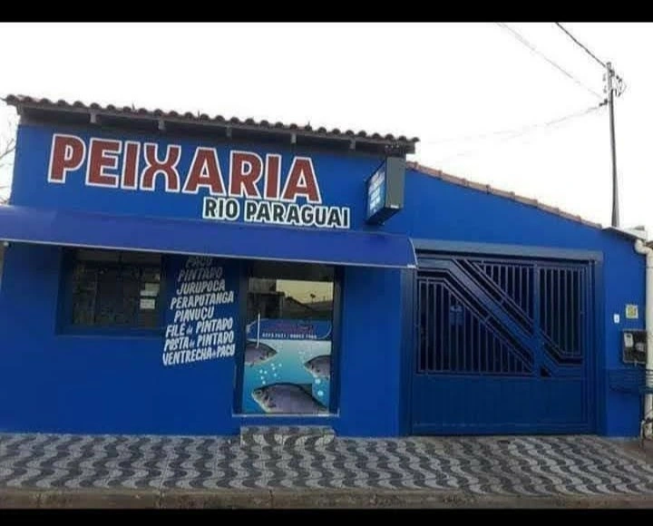

Fundada em 2003, criada com paixão
A Peixaria Rio Paraguai nasceu do sonho de uma família apaixonada pelas águas e pelos peixes do Pantanal mato-grossense. Em 2003, abrimos nossas portas em Cáceres-MT com um único objetivo: oferecer à comunidade local os peixes mais frescos e saborosos que o Rio Paraguai e seus afluentes têm a oferecer.
Nos primeiros anos, a operação era simples e direta — mas o compromisso com a qualidade sempre foi o mesmo de hoje. Cada peixe que chega até nós passa por uma seleção rigorosa, garantindo que apenas o melhor chegue à mesa das famílias que confiam em nosso trabalho.
Com o tempo, conquistamos a confiança de clientes que voltam semana após semana, geração após geração. Essa fidelidade é o nosso maior prêmio e a principal razão pela qual seguimos com dedicação total a cada pedido.

O que nos move
Paixão pelo Pantanal
Somos filhos do Pantanal. Nossa missão é valorizar e preservar a riqueza dos rios e dos peixes que os habitam, levando esse patrimônio à mesa de cada cliente.
Qualidade Inegociável
Mais de duas décadas de prática nos ensinaram que qualidade não é diferencial — é obrigação. Todo peixe é avaliado quanto ao frescor, procedência e integridade antes de chegar ao balcão.
Pesca Responsável
Respeitamos a piracema, os tamanhos mínimos e todas as normas ambientais vigentes em Mato Grosso. Peixes saudáveis hoje garantem rios cheios para as próximas gerações.
Atendimento Familiar
Você não é um número de pedido. Conhecemos nossos clientes pelo nome, sabemos suas preferências e tratamos cada encomenda com o mesmo cuidado de quem cozinha para a própria família.
Peixaria Rio Paraguai em números
+20
anos de tradição
7
espécies no catálogo
6×
por semana, peixe fresquíssimo
100%
foco em qualidade e frescor
Venha nos conhecer
Estamos de segunda a sexta das 7h às 11h e 13h às 18h, aos sábados das 7h às 11h e aos domingos na feira das 6h às 11h. Nossa equipe está pronta para ajudá-lo a escolher o peixe ideal para cada ocasião.